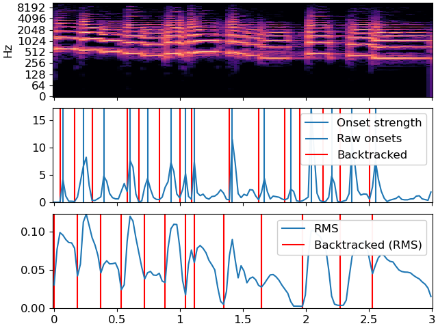

Caution
You're reading an old version of this documentation. If you want up-to-date information, please have a look at 0.9.1.
librosa.onset.onset_backtrack¶
- librosa.onset.onset_backtrack(events, energy)[source]¶
Backtrack detected onset events to the nearest preceding local minimum of an energy function.
This function can be used to roll back the timing of detected onsets from a detected peak amplitude to the preceding minimum.
This is most useful when using onsets to determine slice points for segmentation, as described by 1.
- 1
Jehan, Tristan. “Creating music by listening” Doctoral dissertation Massachusetts Institute of Technology, 2005.
- Parameters
- eventsnp.ndarray, dtype=int
List of onset event frame indices, as computed by
onset_detect- energynp.ndarray, shape=(m,)
An energy function
- Returns
- events_backtrackednp.ndarray, shape=events.shape
The input events matched to nearest preceding minima of
energy.
Examples
Backtrack the events using the onset envelope
>>> y, sr = librosa.load(librosa.ex('trumpet'), duration=3) >>> oenv = librosa.onset.onset_strength(y=y, sr=sr) >>> times = librosa.times_like(oenv) >>> # Detect events without backtracking >>> onset_raw = librosa.onset.onset_detect(onset_envelope=oenv, ... backtrack=False) >>> onset_bt = librosa.onset.onset_backtrack(onset_raw, oenv)
Backtrack the events using the RMS values
>>> S = np.abs(librosa.stft(y=y)) >>> rms = librosa.feature.rms(S=S) >>> onset_bt_rms = librosa.onset.onset_backtrack(onset_raw, rms[0])
Plot the results
>>> import matplotlib.pyplot as plt >>> fig, ax = plt.subplots(nrows=3, sharex=True) >>> librosa.display.specshow(librosa.amplitude_to_db(S, ref=np.max), ... y_axis='log', x_axis='time', ax=ax[0]) >>> ax[0].label_outer() >>> ax[1].plot(times, oenv, label='Onset strength') >>> ax[1].vlines(librosa.frames_to_time(onset_raw), 0, oenv.max(), label='Raw onsets') >>> ax[1].vlines(librosa.frames_to_time(onset_bt), 0, oenv.max(), label='Backtracked', color='r') >>> ax[1].legend() >>> ax[1].label_outer() >>> ax[2].plot(times, rms[0], label='RMS') >>> ax[2].vlines(librosa.frames_to_time(onset_bt_rms), 0, rms.max(), label='Backtracked (RMS)', color='r') >>> ax[2].legend()
